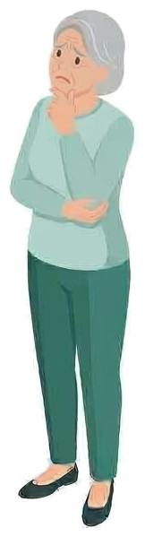

西洋医学と漢方を組み合わせた治療
目の症状に対して、一般的な眼科診療に加えて漢方による治療も行っています。ご希望やお体の状態に合わせてご相談ください。
竹田眼科
札幌市中央区南9条西21丁目5番20号
札幌市中央区 眼科
目の声に耳を傾け、見える安心を支えたい。
西洋医学と漢方を組み合わせた診療で、目のことで気になることをいつでもご相談いただける眼科です。
院長：竹田 眞純

西洋医学と漢方、専門性と通いやすさ。
目の健康を身近な場所で支えます。
目の症状に対して、一般的な眼科診療に加えて漢方による治療も行っています。ご希望やお体の状態に合わせてご相談ください。
網膜・硝子体疾患の診療や硝子体手術、網膜光凝固術など、専門的な診療に取り組んでいます。
白内障の日帰り手術、硝子体手術などの日帰り手術に対応しています。手術について気になる点は、診察時にお気軽にご相談ください。
院内処方を行っており、診察後にお薬を受け取ることができます。通院の負担を少しでも軽くできるよう配慮しています。
症状や目の状態には個人差があります。治療や手術の内容については、診察のうえ、一人ひとりに合わせてご説明いたします。
診療に関するご相談・お問い合わせは、
午前 9:00〜12:30／午後 14:00〜18:00
休診日：日曜・祝日・土曜午後
※火曜日は手術日のため、
※木曜日午後の受付時間は通常17:30までですが、
診療に関するお知らせは、
ご来院前に、
| 午前 | 9:00〜12:30 |
|---|---|
| 午後 | 14:00〜18:00 |
地下鉄「円山公園」駅より、バスで約5分
もいわ山麓駅方面行「南９条西２２丁目」バス停よりすぐ
札幌市中央区南9条西21丁目5番20号
診療に関するご相談・お問い合わせは、
午前 9:00〜12:30／午後 14:00〜18:00
休診日：日曜・祝日・土曜午後
※火曜日は手術日のため、午後の診療はありません。
※木曜日はしばらく午後は休診させていただきます。